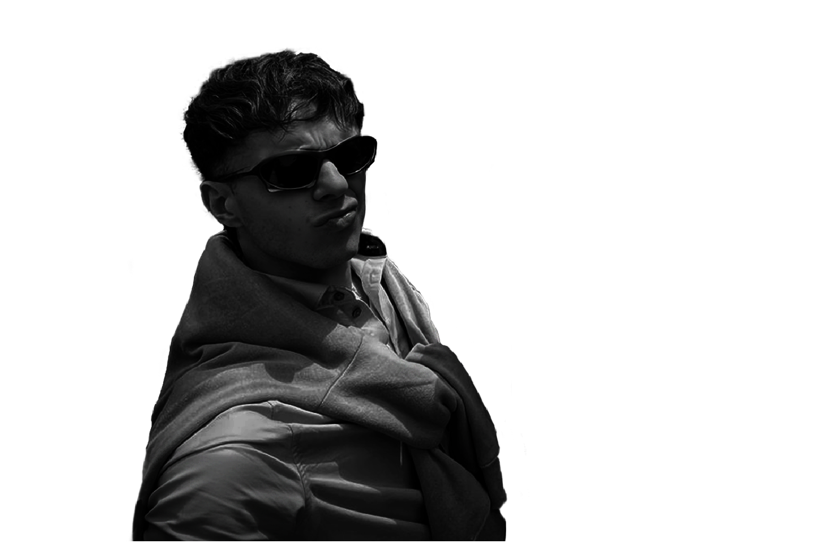

Hi! My name is Gabriele Dallari. I'm a 3D Generalist based in Milan, currently completing my studies in Creative Technologies – 3D & VFX at NABA.
I can follow the full 3D pipeline, from concept to final compositing. Over time I’ve grown a strong passion for environment design, especially in Unreal Engine. I’m collaborative, curious and proactive — always learning and pushing both the artistic and technical side to bring ideas to life.